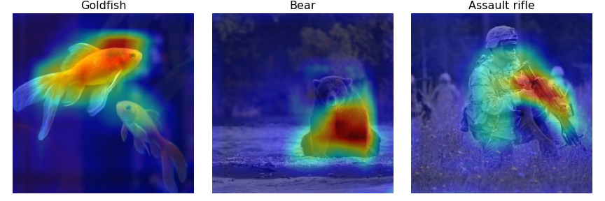

GradCAM

- class tf_keras_vis.gradcam.Gradcam(model, model_modifier=None, clone=True)[source]
Bases:
tf_keras_vis.ModelVisualizationGrad-CAM
References
Grad-CAM: Why did you say that? Visual Explanations from Deep Networks via Gradient-based Localization (https://arxiv.org/pdf/1610.02391v1.pdf)
- Parameters
model – A tf.keras.Model instance. When model_modifier is NOT None, this model will be cloned with tf.keras.models.clone_model function and then will be modified by model_modifier according to needs.
model_modifier – A
tf_keras_vis.utils.model_modifiers.ModelModifierinstance, a function or a list of them. We recommend to apply tf_keras_vis.utils.model_modifiers.ReplaceToLinear to all visualizations (excepttf_keras_vis.scorecam.Scorecam) when the model output is softmax. Defaults to None.clone – A bool that indicates whether or not it clones the model. When False, the model won’t be cloned. Note that, although when True, the model won’t be clone if model_modifier is None. Defaults to True.
- __call__(score, seed_input, penultimate_layer=None, seek_penultimate_conv_layer=True, gradient_modifier=None, activation_modifier=lambda cam: ..., training=False, expand_cam=True, normalize_cam=True, unconnected_gradients=tf.UnconnectedGradients.NONE)[source]
Generate gradient based class activation maps (CAM) by using positive gradient of penultimate_layer with respect to score.
- Parameters
score –
A
tf_keras_vis.utils.scores.Scoreinstance, function or a list of them. For example of the Score instance to specify visualizing target:scores = CategoricalScore([1, 294, 413])
The code above means the same with the one below:
score = lambda outputs: (outputs[0][1], outputs[1][294], outputs[2][413])
When the model has multiple outputs, you MUST pass a list of Score instances or functions. For example:
from tf_keras_vis.utils.scores import CategoricalScore, InactiveScore score = [ CategoricalScore([1, 23]), # For 1st model output InactiveScore(), # For 2nd model output ... ]
seed_input – A tf.Tensor,
numpy.ndarrayor a list of them to input in the model. That’s when the model has multiple inputs, you MUST pass a list of tensors.penultimate_layer – An index or name of the layer, or the tf.keras.layers.Layer instance itself. When None, it means the same with -1. If the layer specified by this option is not convolutional layer, penultimate_layer will work as the offset to seek convolutional layer. Defaults to None.
seek_penultimate_conv_layer – A bool that indicates whether or not seeks a penultimate layer when the layer specified by penultimate_layer is not convolutional layer. Defaults to True.
gradient_modifier – A function to modify gradients. Defaults to None.
activation_modifier – A function to modify the Class Activation Map (CAM). Defaults to lambda cam: K.relu(cam).
training – A bool that indicates whether the model’s training-mode on or off. Defaults to False.
expand_cam – True to resize CAM to the same as input image size. Note! When False, even if the model has multiple inputs, return only a CAM. Defaults to True.
normalize_cam – When True, CAM will be normalized. Defaults to True.
unconnected_gradients – Specifies the gradient value returned when the given input tensors are unconnected. Defaults to tf.UnconnectedGradients.NONE.
- Returns
An
numpy.ndarrayor a list of them. They are the Class Activation Maps (CAMs) that indicate the seed_input regions whose change would most contribute the score value.- Raises
ValueError – When there is any invalid arguments.
- Return type